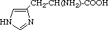
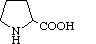
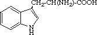
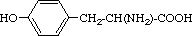

|
Standards - definitions, symbols, nucleotides, codons, amino acids (v2.0) |
|
Since references to WWW-sites are not yet acknowledged as citations, please mention den Dunnen JT and Antonarakis SE (2000). Hum.Mutat. 15:7-12 when referring to these pages.
for the description of sequence variants the following definitions are used
Below an overview of all different characters and signs used in the description of sequence variants with their meaning.
For the complete and official list with further details go to IUPAC-IUBMB or NCBI site.
| Symbol | Meaning | Description |
|---|---|---|
| A | A | Adenine |
| C | C | Cytosine |
| G | G | Guanine |
| T | T | Thymine |
| B | C, G or T | not-A (B follows A in alphabet) |
| D | A, G or T | not-C (D follows C in alphabet) |
| H | A, C or T | not-G (H follows G in alphabet) |
| K | G or T | Keto |
| M | A or C | aMino |
| N | A, C, G or T | aNy |
| R | A or G | puRine |
| S | G or C | Strong interaction (3 H-bonds) |
| V | A, C or G | not-T / not-U ( V follows U in alphabet) |
| W | A or T | Weak interaction (2 H-bonds) |
| Y | C or T | pYrimidine |
| Used in alignments only | ||
| X | A, C, G or T | masked nucleotide |
| - | none | gap of indeterminate length |
| Symbol | Meaning | Description |
|---|---|---|
| a | A | Adenosine |
| c | C | Cytidine |
| g | G | Guanosine |
| u | U | Uridine |
| b | c, g or u | not-a (b follows a in alphabet) |
| d | a, g or u | not-c (d follows c in alphabet) |
| h | a, c or u | not-g (h follows g in alphabet) |
| k | g or u | keto |
| m | a or c | amino |
| n | a, c, g or u | any |
| r | a or g | purine |
| s | g or c | strong interaction (3 H-bonds) |
| v | a, c or g | not-u ( v follows u in alphabet) |
| w | a or u | weak interaction (2 H-bonds) |
| y | c or u | pyrimidine |
NOTE: '*' (alternatively 'Ter') is used to indicate a translation stop codon (replacing the 'X' used previously). To support translation from a DNA sequence a "T" is used in the codons although in nature RNA is translated so the codons contain U's.
| Nucleotide position in codon | |||||
|---|---|---|---|---|---|
| first | second | third | |||
| T | C | A | G | ||
| T | TTT - Phe TTC - Phe TTA - Leu TTG - Leu |
TCT - Ser TCC - Ser TCA - Ser TCG - Ser |
TAT - Tyr TAC - Tyr TAA - */Ter TAG - */Ter |
TGT - Cys TGC - Cys TGA - */Ter TGG - Trp |
T C A G |
| C | CTT - Leu CTC - Leu CTA - Leu CTG - Leu |
CCT - Pro CCC - Pro CCA - Pro CCG - Pro |
CAT - His CAC - His CAA - Gln CAG - Gln |
CGT - Arg CGC - Arg CGA - Arg CGG - Arg |
T C A G |
| A | ATT - Ile ATC - Ile ATA - Ile ATG - Met |
ACT - Thr ACC - Thr ACA - Thr ACG - Thr |
AAT - Asn AAC - Asn AAA - Lys AAG - Lys |
AGT - Ser AGC - Ser AGA - Arg AGG - Arg |
T C A G |
| G | GTT - Val GTC - Val GTA - Val GTG - Val |
GCT - Ala GCC - Ala GCA - Ala GCG - Ala |
GAT - Asp GAC - Asp GAA - Glu GAG - Glu |
GGT - Gly GGC - Gly GGA - Gly GGG - Gly |
T C A G |
For the complete and official list with further details go to IUPAC-IUBMB or NCBI site. (NOTE: formula-images were copied from the IUPAC-IUBMB site)
| One letter code |
Three letter code |
Amino acid | Possible codons | Systemic name | Formula |
|---|---|---|---|---|---|
| A | Ala | Alanine | GCA, GCC, GCG, GCT |
2-Aminopropanoic acid | CH3-CH(NH2)-COOH |
| B | Asx | Aspartic acid or Asparagine |
AAC, AAT, GAC, GAT |
||
| C | Cys | Cysteine | TGC, TGT | 2-Amino-3-mercaptopropanoic acid | HS-CH2-CH(NH2)-COOH |
| D | Asp | Aspartic acid | GAC, GAT | 2-Aminobutanedioic acid | HOOC-CH2-CH(NH2)-COOH |
| E | Glu | Glutamic acid | GAA, GAG | 2-Aminopentanedioic acid | HOOC-[CH2]2-CH(NH2)-COOH |
| F | Phe | Phenylalanine | TTC, TTT | 2-Amino-3-phenylpropanoic acid | C6H5-CH2-CH(NH2)-COOH |
| G | Gly | Glycine | GGA, GGC, GGG, GGT |
Aminoethanoic acid | CH2(NH2)-COOH |
| H | His | Histidine | CAC, CAT | 2-Amino-3-(1H-imidazol-4-yl)-propanoic acid |  |
| I | Ile | Isoleucine | ATA, ATC, ATT | 2-Amino-3-methylpentanoic acid | C2H5-CH(CH3)-CH(NH2)-COOH |
| K | Lys | Lysine | AAA, AAG | 2,6-Diaminohexanoic acid | H2N-[CH2]4-CH(NH2)-COOH |
| L | Leu | Leucine | CTA, CTC, CTG, CTT, TTA, TTG |
2-Amino-4-methylpentanoic acid | (CH3)2CH-CH2-CH(NH2)-COOH |
| M | Met | Methionine | ATG (translation initiation) |
2-Amino-4-(methylthio)butanoic acid | CH3-S-[CH2]2-CH(NH2)-COOH |
| N | Asn | Asparagine | AAC, AAT | 2-Amino-3-carbamoylpropanoic acid | H2N-CO-CH2-CH(NH2)-COOH |
| P | Pro | Proline | CCA, CCC, CCG, CCT |
Pyrrolidine-2-carboxylic acid |  |
| Q | Gln | Glutamine | CAA, CAG | 2-Amino-4-carbamoylbutanoic acid | H2N-CO-[CH2]2-CH(NH2)-COOH |
| R | Arg | Arginine | AGA, AGG, CGA, CGC, CGG, CGT |
2-Amino-5-guanidinopentanoic acid | H2N-C(=NH)-NH-[CH2]3-CH(NH2)-COOH |
| S | Ser | Serine | AGC, AGT, TCA, TCC, TCG, TCT |
2-Amino-3-hydroxypropanoic acid | HO-CH2-CH(NH2)-COOH |
| T | Thr | Threonine | ACA, ACC, ACG, ACT |
2-Amino-3-hydroxybutanoic acid | CH3-CH(OH)-CH(NH2)-COOH |
| U | Sec | Selenocysteine | TGA, ... | H2N-CH(COOH)--CH2-SeH | |
| V | Val | Valine | GTA, GTC, GTG, GTT |
2-Amino-3-methylbutanoic acid | (CH3)2CH-CH(NH2)-COOH |
| W | Trp | Tryptophan | TGG | 2-Amino-3-(lH-indol-3-yl)-propanoic acid |  |
| X | Xaa | unknown or 'other' |
NNN | ||
| Y | Tyr | Tyrosine | TAC, TAT | 2-Amino-3-(4-hydroxyphenyl)-propanoic acid |  |
| Z | Glx | Glutamic acid or Glutamine |
|||
| * | * (Ter) | Termination | TAA, TAG, TGA (translation termination) |
HGVS addition (V2.0) | |
| Used in alignments only | |||||
| - | - | gap of indeterminate length | - | ||
| Top of page | Homepage
| Check-list | Standards |
| Recommendations: general, DNA, RNA, protein, uncertain |
| Discussions | FAQ's | History |
| Example descriptions: QuickRef, DNA, RNA, protein |
Copyright © HGVS 2010
All Rights Reserved |